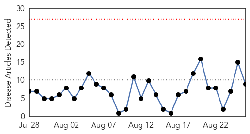

Mumps
30-Day Web Trend
6 alerts, 0 warnings

30-Day Twitter Trend
3 alerts, 0 warnings

Article Locations

Article Confidences

Top Articles:
Top Tweets:
- 0.926
- RT: U Illinois mumps outbreak nears 100, health officials advise on prevention | Outbreak News Today http://t.co/ByFmc2ujvg
Influenza
30-Day Web Trend
0 alerts, 0 warnings

30-Day Twitter Trend
5 alerts, 0 warnings

Article Locations

Article Confidences
Top Articles:
- 0.997
- To flu or not to flu
- 0.958
- Pharmacists Play Key Role in Preventing Flu Pandemic
- 0.930
- IBTimes Newsletters
- 0.929
- Researchers inch closer to a universal flu vaccine
- 0.887
- Influenza vaccine also prevents heart attacks, UNSW study finds
- 0.843
- Early Fall Is Best Time to Get Flu Shot
- 0.751
- August 25, 2015 Archives
- 0.751
- August 25, 2015 Archives
- 0.547
- Health Department to give flu shots
Top Tweets:
-
No tweets found for Aug 26, 2015